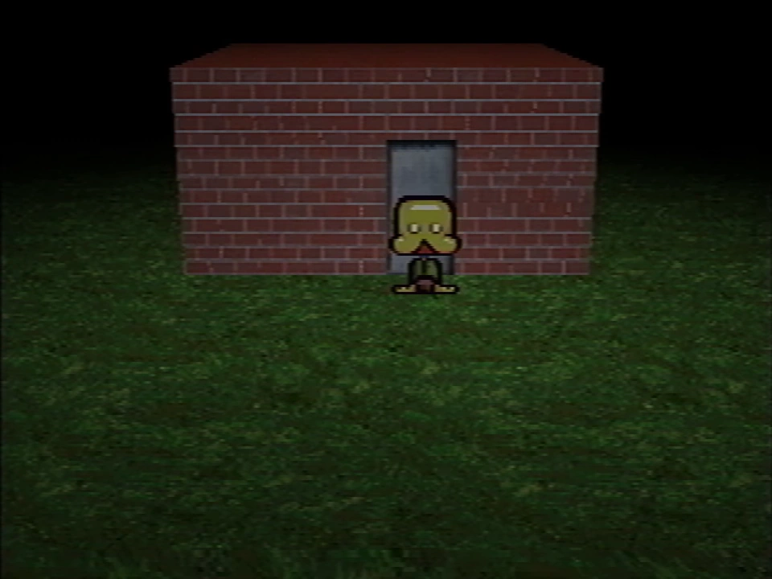
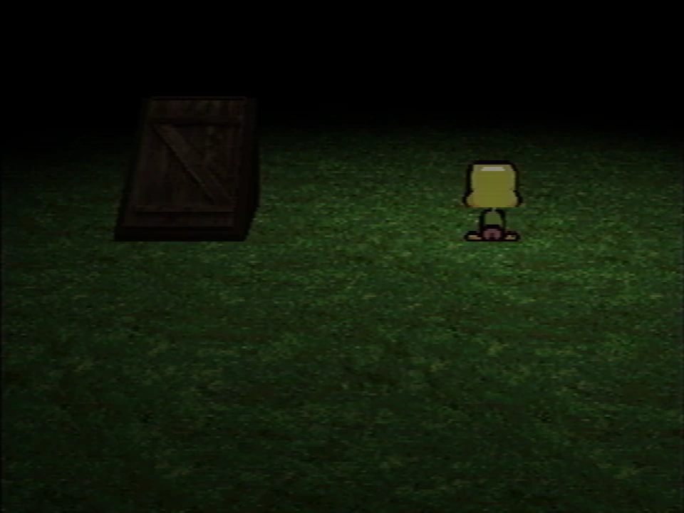
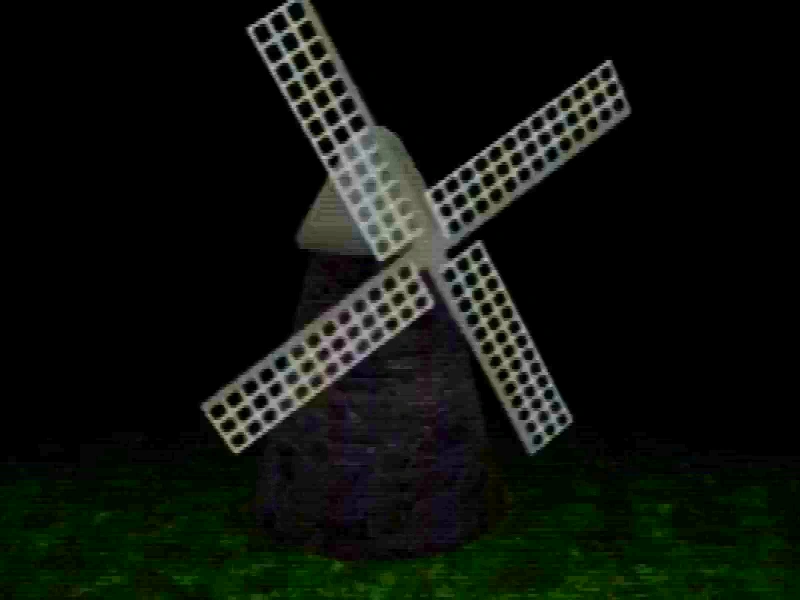
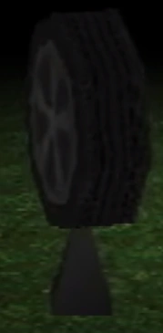
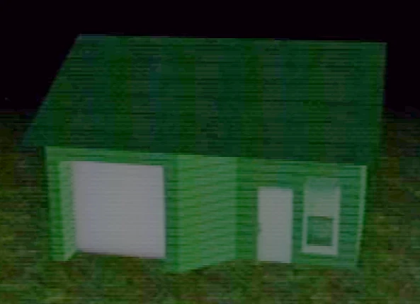
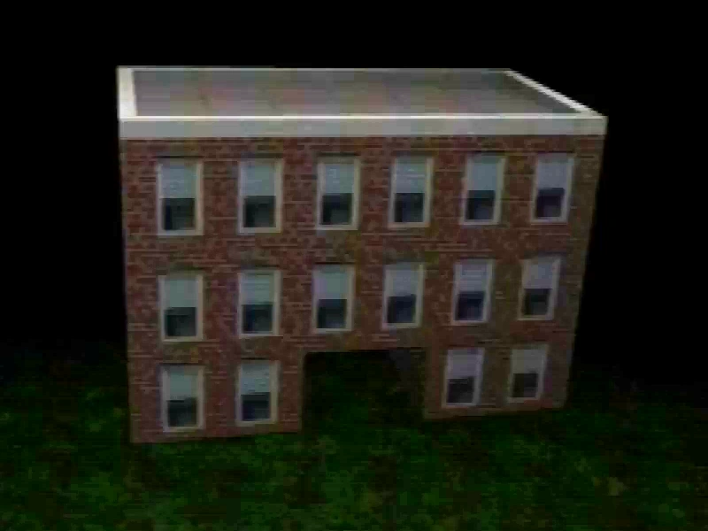

Newmaker Plane
{kind=link}

{kind=link}
The player standing next to the brick building in the Newmaker Plane
The Newmaker Plane is a section of Petscop that can be accessed from Even Care after entering the button code from the note.
The Newmaker Plane appears primarily as a grass plain, with a few points of interest spread far between. Black fog obscures the area around the player. An additional level of rooms and areas can be accessed through doors that lead under the grass; this is referred to by the red tool as "under the Newmaker Plane".
In Petscop 23, after using the machine in the school basement, the black fog covering the Newmaker Plane turns to a blue color.
The Newmaker Plane appears in multiple of the loading screens.
Locations & objects
Brick building
When the player first enters the Newmaker Plane, they appear next to a small brick building with a closed door.
In Petscop 9, after interacting with a gift box in the party room, Paul finds a brick building with a symbol block above an open door. The door leads Paul to Odd Care. It is unclear whether this is the same building that appeared previously.
During Petscop 20, in a message directed at Marvin, Rainer writes "this model of a brick building, though crude, should still be familiar to you."
Doors
{kind=link}

{kind=link}
The first door Paul finds
Various wooden doors are around certain locations in the Newmaker Plane, offering access points to the underground area ("under the Newmaker Plane" as specified by the red tool).
Towards the end of Petscop 1, Paul finds a closed door which he is unable to open. In Petscop 2, this door opens automatically. After exploring the underground area, Paul finds a staircase which exits through another wooden door, leading back to the Newmaker Plane.
In Petscop 20, Marvin finds a wooden door leading to a room displaying the caskets. Marvin can open the door, unlike Paul.
Windmill
{kind=link}

{kind=link}
The windmill
- Main article: Windmill
The windmill is one of the major buildings on the Newmaker Plane. Unless the player is viewing it from an unaffected camera from the screen in the tool room or is a shadow monster man, the windmill appears only as a translucent, shaking foundation. When the player is a shadow monster man, they can enter and exit the interior of the windmill.
Camera
The camera is an object that sets the point for the screen in the tool room to view from. It appears that Marvin is able to move it.
Tire
{kind=link}

The tire
The tire is an object found in Petscop 11, it is used for navigation by the player. Paul is able to circle the tire several times, bringing up a grey box which he uses to ask "Where is house?", causing the tire to spin in a certain direction and guide him to the house.
Paul credits his ability to locate the tire to a "drawing", and offers to scan the drawing and send a copy of it to whoever the video is addressed to (which is either Belle or someone from the family), but does not elaborate very much within the video.
House
{kind=link}

{kind=link}
The house
- Main article: House
The house is one of the major buildings on the Newmaker Plane. It borders one of the roads, and in some variations of it, additional decorations are outside of it.
Marvin views it as his own house, and Care A can be found here.
Road
There is a long paved road on the Newmaker Plane in front of the house.
At one part of the road to the left of the house, an archway can be found, along with the teal tool.
School
{kind=link}

{kind=link}
The school
- Main article: School
The school is one of the major buildings on the Newmaker Plane. A black bench sits outside of it.
Lina's grave


{kind=link}
Lina's grave
At a hidden location on the Newmaker Plane, the grave of Lina Leskowitz can be found and accessed.
Gallery
")
")
.png (465 KB)")
| Gift Plane | Gift Plane · Even Care · Odd Care · Work Zone |
|---|---|
| Newmaker Plane | Newmaker Plane · Office · Grave room · Tool room · Quitter's Room · Child Library · Windmill · Party room · House · School |